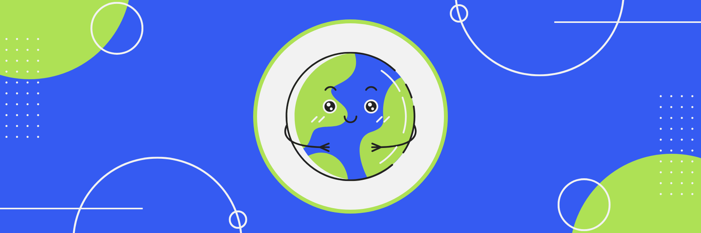

The Social Futures Lab at UW CSE is reimagining social and collaborative systems in software. As a research assistant, Kevin designed a social computing curriculum, partnered with Seattle Public Schools to implement the curriculum in middle and high school classrooms, and co-authored a publication with his team's findings for the ACM SIGCSE Technical Symposium in 2024.

30+ is a math game developed with C# and Unity to address the learning loss faced by students nationwide. Kevin designed the game to support elementary students strengthen their fact fluency through a series of progressively difficult challenges. The game has been shared with classrooms across Seattle, engaging young learners in building their math skills.
Spelling Bee is a literacy game created with JavaScript to help students strengthen their phonetic skills. Kevin designed the game to support elementary students in improving their literacy through interactive spelling challenges. The game has been shared with classrooms nationwide, engaging young learners in practicing both their phonetic and keyboard skills.
Amazon is a global e-commerce leader with a range of products across international markets. As a software development engineer, Kevin developed a metadata replication feature to improve Amazon’s regional experimentation system. This enhancement supported seven marketplaces across North America, Europe, and Asia, increasing profits for global stakeholders.
Project Sidewalk is an international platform that allows users to crowdsource information on sidewalk accessibility. As a software engineer with UW CSE, Kevin debugged the website to improve functionality and user experience. He also internationalized the platform for users across four continents and 21 cities, including Amsterdam, Chicago, Mexico City, and Taipei.
